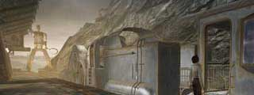
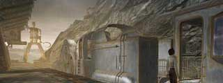

| バラディレーン |
バロクシュタット |
| コムコルツグラッド1  |
アラルバッド1 |
| コムコルツグラッド2 |
| アラルバッド2 |
| 概要 | 地図 | |
| 淡いヒント集 | ヒント集 | 的確なヒント集 |
| 攻略最短ルート | Syberia 攻略へ |
Syberia
| 目次へ戻る | ページの上部へ |
| バラディレーン |
| バロクシュタット |
| コムコルツグラッド1  |
| アラルバッド1 |
| コムコルツグラッド2 |
| アラルバッド2 |
| 概要 | 地図 | |
| 淡いヒント集 | ヒント集 | 的確なヒント集 |
| 攻略最短ルート | Syberia 攻略へ |